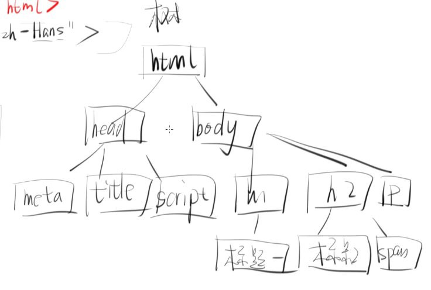
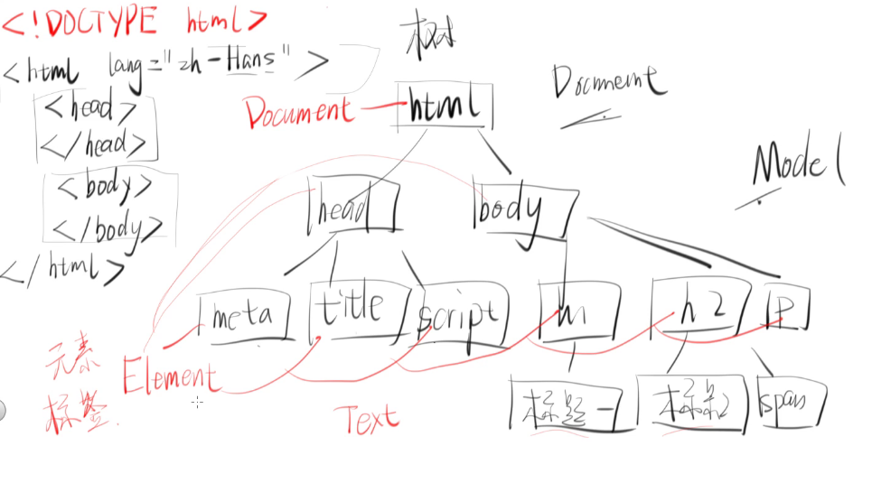
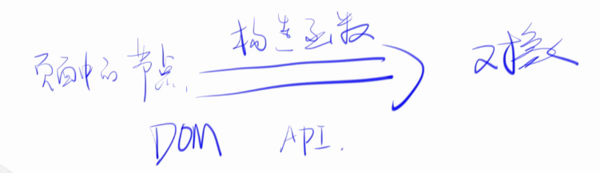
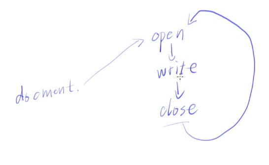

DOM
什么是 DOM，DOM 就是 Document Object Model(文档对象模型),一般来讲 Document(文档) 就是指 xml/html 文档, html 是 xml 的衍生品, Object 就是把文档变成一个对象, Model 就是被抽象成的模型
写 html 时先写啥
|
其中 html 的树形结构如下图所示

然而这个树并不是存在于内存中的,那么怎么样才能把这种结构存在内存中呢?
就是通过一个对象 (Object)来存储,它们中间有一层模型(Model)的映射关系,而通过这个模型,可以将文档(Document)变成对象(Object),也就是所谓的 DOM
那么 Object 里面到底存什么呢,有一个 DOM 标准
可以存成 Element 对象,也可以存成 Text 对象,也可以存成 Document
如下图

这三个原型链的 __proto__ 都是 Node,其继承关系如下
- Node
- Document
- html
- Element
- head body meta title script h1 h2 p
- Text
- 标题1 span
- Comment 注释
- …(其他)
- Document
DOM 的转化公式如下

Node 接口
属性
- childNodes
- firstChild
- innerText
- lastChild
- nextSibling
- nodeName
- nodeType
- nodeValue
- outerText
- ownerDocument
- parentElement
- parentNode
- previousSibling
- textContent
没有人在工作中用 DOM API ,除非你很闲
html 中回车也算文本
document.body.childNodes 会获取到子标签,包括标签间的空格以及回车document.body.children 会获取到子节点,不包括标签间的空格以及回车
nextElementSibling 获取到下一个 Element 的兄弟节点
document.documentElement.nodeName 才能获取到 html
nodeType Element node 是 1, Text node 是 3
具体参考nodeType MDN
需要注意的是 DocumentFragment 优化
innerText 和 textContent
前者的 API 是 IE 的,直接获取文本内容,后者是 Firefox 以及 Opera 的,
详情见 textContent 与 innerText 的区别
主要是 innerText 会检查 css,比如会检查 css 中有没有 display: none; 属性,而 textContent 就不会,这样的话就 textContent 而言性能就高一些
构造函数是怎么把标签变成对象的?
function createPerson() { |
只要这个函数返回了一个对象,那么就构造了这个对象,只是说用几个属性抽象成了这个对象
方法
- appendChild()
- cloneNode() // 深拷贝节点
- contains()
- hasChildNodes()
- insertBefore()
- isEqualNode()
- isSameNode()
- removeChild()
- replaceChild()
- normalize() // 常规化
cloneNode 中间有传的参数表示是否进行深拷贝 var dupNode = node.cloneNode([deep]); 以 div 节点为例,假如这个节点有一个或者多个子节,那么深拷贝会连这个节点及其子节点都拷贝过去,而 浅拷贝则只会拷贝这个节点,不会拷贝这个节点的子节点
isEqualNode 与 isSameNodeisSameNode 可以简写成 ===,而 isEqualNode 从概念上讲有点像 == ,但是对于节点来说不能用 == 符号来替代
normalize
以下是 MDN 上的 demo 代码
var wrapper = document.createElement("div"); |
在标签中加入文本
div1.innerText = 'hello world' |
innerText 有个副作用,假如如上的 div 中有个 span, 那么使用 innerText 就是会将这个 span 元素清空掉
更安全的方式是生成一个节点
div1.appendChild(document.createTextNode('hello world')) |
Document 和标签的 API
属性
- anchors // 获取锚点元素
- body
- characterSet //获取字符
- childElementCount
- children
- doctype
- documentElement
- domain
- head
- hidden
- images
- links
- location
- onxxxxxxxxx // 一系列的事件监听
- origin
- plugins
- readyState
- referrer
- scripts
- scrollingElement
- styleSheets
- title
- visibilityState
referrer
待续
方法
- close()
- createDocumentFragment()
- createElement()
- createTextNode()
- execCommand()
- exitFullscreen()
- getElementById()
- getElementsByClassName()
- getElementsByName()
- getElementsByTagName() // 很难用
- getSelection()
- hasFocus()
- open()
- querySelector() // 返回一个元素
- querySelectorAll() // 返回所有元素
- registerElement()
- write()
- writeln() // 写一行
close
像如下代码
document.write(1) |
执行的结果(先显示了 1 跟 2)显示出来是 3, 这是为什么呢
document 运行的过程如下
页面在加载第一个标签时就处于 open 状态,页面加载完毕之后才能 close ,这个时候若想要再 write, 必须先回到最开始的 open 状态,进而把之前的内容给覆盖掉,所以这个 api 在使用时需要特别小心
,尽量少用 write

execCommand
写富文本编辑器(有样式的)时可以用到这个 api,
querySelector 返回一个元素querySelectorAll 返回一个伪数组(原型链中没有 Array.prototype)
Element
innerHTML 与 innerText 的区别
以一个输入框举例
<input type="text" id="input1"><button id=x> |
加入这个时候用户输入的是 <b>123</b>, innerHTML 会将用户的输入处理成有加粗的 123,所以这就是有危险的,万一输入框中是一段 js 代码呢
而 innerText 则处理的是纯文本,用户输入什么它就输出什么
详情见 Element MDN
注意
- DOM 现在的通用版本是 DOM Level 3
- 节点的类型有 7 种,分别是
- Element node
- Text node
- ProcessingInstruction node (Attribute ???)
- Comment node
- Document node
- DocumentType node
- DocumentFragment node
- 元素 Element 的 NodeType 值为 1 或者 Node. ELEMENT_NODE
有如下代码, x.nextSibling 的值为 回车构成的文本节点
<div id=x></div>
<div id=y></div>有如下代码, 那么 parent1.childNodes 的值是 {0:child1, length:1} 伪数组
<div id=parent1><div id=child1></div></div>
parent.childNodes 是动态集合。所谓动态集合就是一个活的集合，DOM树删除或新增一个相关节点，都会立刻反映在NodeList接口之中。
- document.querySelectorAll方法返回的是一个静态集合。DOM内部的变化，并不会实时反映在该方法的返回结果之中。
- HTMLCollection实例对象的成员只能是Element节点，NodeList实例对象的成员可以包含其他节点。
- HTMLCollection实例对象可以用id属性或name属性引用节点元素，NodeList只能使用数字索引引用。